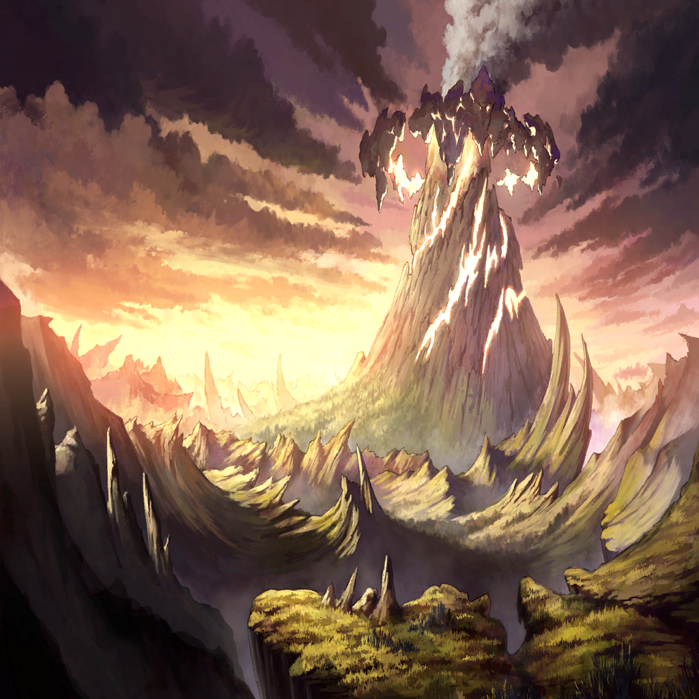

|
|  |
 |
| ローレアム |
―――― |
|

ワギナオ |
今度は、ローレアムか |
|
| ローレアム |
――シナイの聖山に眠る我らが導きよ
貴方の騎士ローレアムがここに誓います |
| ローレアム |
平穏なる日々を
嘆きを知らぬ木漏れ日を
奪うことなき街並みを |
| ローレアム |
命に代えても、守り抜くと
この、赤の剣に…！ |
|
ワギナオ |
ここは、これで終わりか？
だとすれば、この夢は外れか |
ワギナオ |
…現金だな、俺は
今は急ぐ時だというのに、彼女の身に
不幸がないと知って安心している… |
ワギナオ |
リンドレイクの姿がないのは
気にかかるが―― |
ワギナオ |
…ッ!? |
 |
ワギナオ |
これは…！ |
ワギナオ |
この、炎は…罪獣サタンの!?
セルジーク…！
頼む、君の海の力で―― |
| セルジーク |
…ワギナオ様 |
ワギナオ |
何をしているんだ、セルジーク！
君ならあの火を消せるだろう!? |
ワギナオ |
このままでは町の人々が―― |
| セルジーク |
その町を、見てください |
ワギナオ |
え――？ |
 |
| 憤怒の民 |
あ、あぁぁ、ぁぁぁぁぁ!! |
ワギナオ |
これ、は…？ |
| ローレアム |
みんな、どうして…！ |
| ローレアム |
笑って生きようって、決めたじゃない
手を取り合って行こうって言ったじゃない |
| ローレアム |
なのに、どうして。どうして… |
| ローレアム |
どうして、反乱なんか… |
| 憤怒の戦士 |
…許せ、とは言わない |
| 憤怒の戦士 |
だが、どうあっても足りない…
次の火の雨を越えるだけの資材が、
足りないんだ… |
| ローレアム |
それなら譲り合えばいい！
みんなで助け合えば、きっと今年も…！ |
| 憤怒の戦士 |
それで、ウチの末の子は死んだ…！ |
| ローレアム |
…っ、それ、は… |
| 憤怒の戦士 |
…恨んでるわけじゃない
憎みたいわけでもない
けど、けどな…！ |
| 憤怒の戦士 |
もう、これしかないんだ…
奪い合うしか…
強い奴が、生き残るしか… |
| 憤怒の戦士 |
憎んでくれ…恨んでくれ…
生に縋りつく俺たちを、呪ってくれ… |
| 憤怒の戦士 |
その痛みを、嘆きを、怒りを背負って…
俺たちは必ず生き抜いて見せる…！ |
| ローレアム |
――、あぁ、そっか
君、泣いて―― |
| 憤怒の戦士 |
…っ、食料も資材も、すべて奪え！
健康そうな子供は全員攫え！
弱い者は…っ、こ、この場で殺せ！ |
| 憤怒の戦士 |
急げ！ 竜の怒りが来るぞ！
我らをもはや忘れ果てた、
憤怒の竜の慟哭が…！ |
|
ワギナオ |
これは、そんな… |
| セルジーク |
…ワギナオ様 |
ワギナオ |
…わかっているさ
これが、ザフィリスの…
竜たちの記憶だというのなら |
ワギナオ |
越えた先に、リルがいる…！ |

炎の穢れの化身 |
憎イ、憎イ！
憎イ憎イ憎イ憎イ憎イ憎イ憎イ憎イ憎イ憎イ
アァソレホドマデニ狂ッタカ…!!! |
ワギナオ |
…リンドレイク… |
ワギナオ |
その怒りは正しい。その憎悪は正しい
――だが、推し通るっ!! |